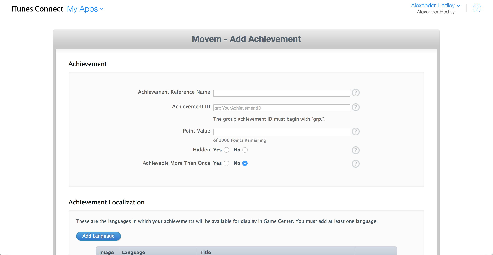
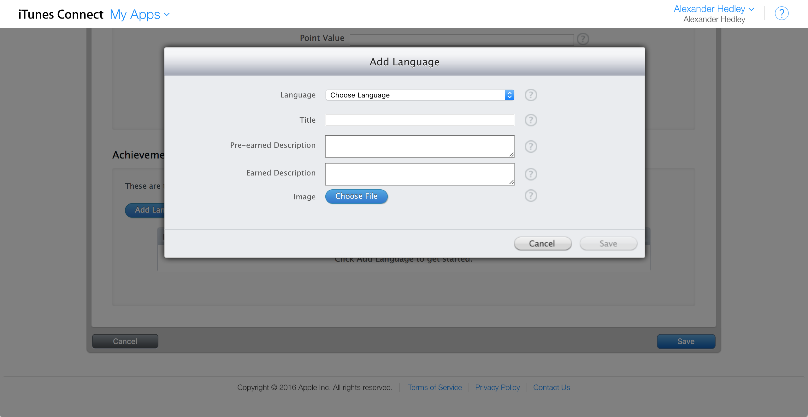
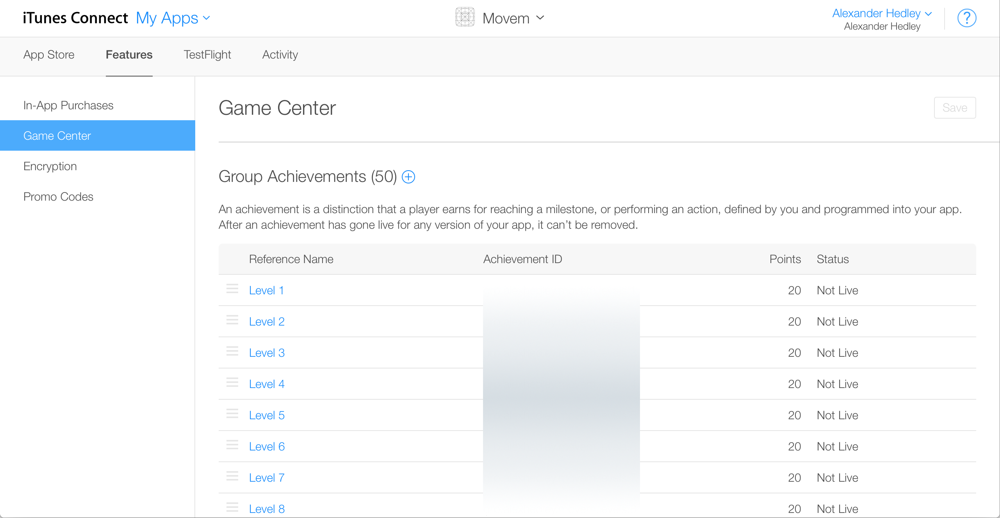
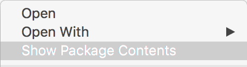

I'm currently creating a game Movem, and I wanted to add some Game Center achievements. I'd done this before in another app I'm making for Kernowland Quizzes (still in development). There are only a couple of achievements there so wasn't much hassle to create them manually but here I want 1 for each of the 50 levels. This would be a big pain to do.
[gallery ids="525,524,526" type="rectangular"]
  
So I turned to twitter and asked @KrauseFx as I thought he might know.
@AlexHedley You can also use iTunes Transporter as far as I know
— Felix Krause (@KrauseFx) April 8, 2016
Researching a little I found the app should be in either Xcode or App Transporter. Some SO answers said it was under the MacOS folder but I found it to be now just under itms in the Contents folder.
/Applications/Xcode.app/Contents/Applications/Application Loader.app/Contents/MacOS/itms/ bin => /Applications/Xcode.app/Contents/Applications/Application Loader.app/Contents/itms/bin
Now to find some information about the app itself, lets look to iTunesConnect Resources and Help under Apps.
Open the terminal and navigate to the above folder:
./iTMSTransporter -m diagnostic
Next we want to download the information we have on an app so we can use the lookupMetadata flag.
./iTMSTransporter -m lookupMetadata -u # -p # -apple_id # -subitemtype GameCenterAchievement -destination "#"
Replace the #s with your actual inputs.
This will download a file "AppleID.itmsp", if you double click this it will open in Application Loader, you don't want this, instead Right+Click and Show Package Contents:

There's a file called "metadata.xml", open this in your editor of choice, Xcode works fine since it's just XML.
I'm interested in the Game Center info so scroll down:
<game_center>
<achievements>
...
</achievements>
</game_center>
Within here are a couple of achievements I've already created, from research errors can occur if you remove these and re-upload so either leave them in and only make additions to the file or remove them from iTunesConnect and run lookupMetadata again.
I needed at least one already created so I had a template to work with.
I created a playground as this would be the quickest way to create what I needed
for i in 1...50 {
print(blah \\(i))
}
Now I just needed to replace the number with \(i) in all the places necessary and show the console.
[gist 06bab62bee6402d97f3eb3c5cf6db9d4/]
GameCenterAchievements.swift
for i in 1...50 {
print("<achievement position=\"\(i)\">")
print(" <achievement_id>grp.alexhedley.movem.levels.\(i)</achievement_id>")
print(" <reference_name>Level \(i)</reference_name>")
print(" <points>20</points>")
print(" <hidden>false</hidden>")
print(" <locales>")
print(" <locale name=\"en-US\">")
print(" <title>Level \(i)</title>")
print(" <before_earned_description>Complete Level \(i)</before_earned_description>")
print(" <after_earned_description>Level \(i) Completed</after_earned_description>")
print(" <achievement_after_earned_image>")
print(" <size>373711</size>")
print(" <file_name>Game_20Center_20Level.png</file_name>")
print(" <checksum type=\"md5\">b2a849caa092e5bee3e117e67f54fd35</checksum>")
print(" </achievement_after_earned_image>")
print(" </locale>")
print(" </locales>")
print("</achievement>")
}
Copy and paste that back into the "metadata.xml" and I'm ready to upload.
First thing to do is verify the file.
./iTMSTransporter -m verify -f "#/\[AppleId\].itmsp" -u # -p #
Now I can upload.
./iTMSTransporter -m upload -f "#/\[AppleId\].itmsp" -u # -p #
There was one thing that was missing, the image file:
ERROR: The file Game_20Center_20Level.png is from the list of files requested by Apple, but it was not found locally.
To fix this I just renamed the file I'd uploaded in iTunesConnect to match the above and added it to the PackageContents folder and all was good.
I'd originally tried the "lookupMetadata" without the -subitemtype flag but got an error when trying to upload,
ERROR ITMS-10001: "Multiple items in this package use the same vendor ID. Use unique vendor IDs for the items [leaderboard, achievement] and resubmit the package." at Software/SoftwareMetadata
...
DBG-X: The error code is: 1102
Learn more about Game Center in Chapters 25 and 26 of 2D iOS & tvOS Games by Tutorials from Ray Wenderlich.
Links https://twitter.com/AlexHedley/status/718513616132161536 https://twitter.com/KrauseFx/status/718526581950427136
http://itunespartner.apple.com/en/apps/guides https://help.apple.com/itc/transporteruserguide/
http://stackoverflow.com/questions/11205998/ios-game-center-achievement-upload http://bou.io/UploadingScreenshotsWithITMSTransporter.html http://www.cyrilchandelier.com/having-fun-with-itmstransporter
What's New in iTunes Connect
WWDC 2013 - Session 306 - iOS, OS X